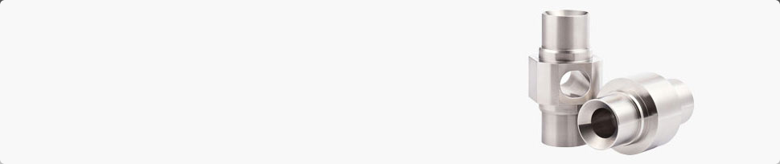
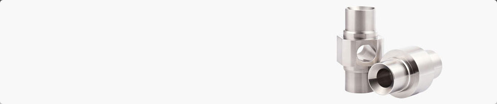

ÜBER UNS
Unser Firmenprofil
Unser Familienbetrieb wird bereits in der dritten Generation mit Herz und Hand geführt. Von der kurvengesteuerten Drehmaschine bis zu den neuesten CNC-gesteuerten Dreh- und Fräszentren haben wir miteinander ein Stück Geschichte geschrieben.
Durch unsere langjährige Erfahrung bieten wir ein umfassendes KnowHow, das sich nicht zuletzt aus unserem eingespielten und engagierten Team entwickelt hat.
Für uns liegt der Schlüssel zu einem erfolgreichen Projekt in der Kombination aus sorgfältiger Planung und professioneller wie qualitativ hochwertiger Umsetzung. Daher legen wir großen Wert auf eine umfassende Beratung und Betreuung unserer Kunden.
Der Dreh- und Angelpunkt unseres Schaffens liegt seit mehr als 25 Jahren in Bobingen. Von dort aus betreuen wir Kunden aus ganz Deutschland. Überall an Ihrer Seite!

LEISTUNGEN
Fertigungsausrichtung
Die Fertigung von Stückzahlen liegt im Bereich zwischen 100 und 2000 Stück. Seit jüngster Zeit haben wir die Rüst- und Programmierarbeiten sukzessive optimiert, wodurch wir inzwischen schon ab Stückzahlen größer 20 Stück fertigen können, wenn die Aufträge repetierend auftreten.
Die von uns verwendeten Werkstoffe umfassen die Werkstoffgruppen Stahl (1.0037, 1.0503, 1.0570, 1.0715/-18, 1.2842, 1.4021, 1.4301/-05, 1.4404, 1.4571, 1.7142, 1.7225 u.ä.), Messing (2.0402 u.ä.), Rotguss (2.1052 u.ä.) und Aluminium (3.1645, 3.2315, 3.4365 u.ä.). Verarbeitet werden sowohl Rundmaterialien als auch Kant- bzw. Flachmaterialien von qualitativ hochwertigen Zulieferern.
Im Sinne einer durchgängigen Qualitätssicherung werden sowohl Material- wie auch Prüfzeugnisse jedem Auftrag auf Wunsch beigelegt. Die Dokumente werden bei uns automatisch mit jedem Auftrag mitgeführt, um dauerhaft ein hohes Qualitätsniveau garantieren zu können.
Wir bieten unseren Kunden die Möglichkeit, die fertigen Produkte galvanisch behandeln oder härten zu lassen. Unsere Zulieferer sind auch in diesem Bereich äußerst zuverlässig und haben sich in den letzten 30 Jahren auf dem Markt behauptet.
Drehen
- 2 Stk. Traub TNS 60
- Werkstück-Ø von 12 bis 60mm, Futterteile bis Ø160mm
- Stangenlademagazin (3m)
- Futterteile möglich
- Einsatz von Reitstock möglich
- Querwerkzeuge (ohne Y-Achse)
- Möglichkeit zur Fertigung von Verzahnungen, Schlüsselweiten und Rändeln
- Sehr hohe Wiederholgenauigkeit
- 1 Stk. Traub TND 400
- Werkstück-Ø von 12 bis 60mm
- Stangenlademagazin (3m)
- Einsatz von Reitstock möglich
- Querwerkzeuge (ohne Y-Achse)
- Möglichkeit zur Fertigung von Verzahnungen, Schlüsselweiten und Rändeln
- Sehr präzise Fertigung von Drehteilen ohne Fräsanteil
- Sehr hohe Wiederholgenauigkeit
- 1 Stk. Traub TNA 400
- Werkstück-Ø von 16 bis 80mm
- Stangenlademagazin (1m)
- Einsatz von Reitstock möglich
- Querwerkzeuge (mit Y-Achse)
- Fertigung von kompletten Frästeilen mit 5-seitiger, nicht orthogonaler Bearbeitung
- Sehr hohe Wiederholgenauigkeit
- 2 Stk. Fanuc FL
- Werkstück-Ø von 8 bis 60mm, Futterteile bis 160mm
- Reine Dreharbeiten
- Rückseitenbearbeitung, automatisierte Entgratarbeiten, Kleinserien
Des Weiteren verwenden wir zwei konventionelle Drehbänke, eine Flachbettschleifmaschine, eine Vertikalschleifmaschine mit Magnetrundtisch, eine konventionelle Fräsmaschine (durch Ausbau NC-unterstützt) sowie einige Standbohrmaschinen, Winkelschleifer, Bandschleifer und Schleifböcke zur Nachbearbeitung und Veredelung unserer Produkte.
Fräsen
- 1 Stk. Deckel FP3NC
- 3 NC-gesteuerte Linearachsen plus NC-gesteuerter Rundtisch
- Modulares System zur Verwendung von 3- bzw. 4-Backen-Futter, Schraubstock oder individueller Spannvorrichtungen
- Verfahrwege: 400x315x400mm; durch Sondervorrichtungen erweiterbar
- Großes Werkzeugsortiment aus den Bereichen Monozerspanung sowie modulare Zerspanung
- 1 Stk. Deckel DC50V
- 3 NC-gesteuerte Linearachsen
- Modulares System zur Verwendung von 3- bzw. 4-Backen-Futter, Schraubstock oder individueller Spannvorrichtungen (inkl. Lochplatte)
- Verfahrwege: 650x500x500mm; durch Sondervorrichtungen erweiterbar
- Großes Werkzeugsortiment aus den Bereichen Monozerspanung sowie modulare Zerspanung

REFERENZEN
Wir sind stolz auf unsere zufriedenen Kunden
- Hörauf und Kohler
- Renk AG
- Kuka
- MAN Diesel
- Fluhr Displas
- Osram
- Kessler Verlagsdruckerei
- Wafa
- Clean Concept
- Erhardt + Leimer
- AKF
- Hilti
- Guido Kübler GmbH
- Ludwig Leuchten
- Leichtmetall Andreas Rittel
- Castro GmbH
- Dittrich & Co.
- ASAB GmbH
- Baldwin
- Siemens
- und andere ...
IMPRESSUM
Rechtliche Hinweise:
Unternehmensangaben:
Karlinger Drehen-Fräsen-Komponenten GmbH
Hans-Böckler-Strasse 3
86399 Bobingen
Telefon: +49 (0)162 4187176
Telefax: +49 (0)8234 7523
E-Mail: info@karlinger-gmbh.de
Amtsgericht Augsburg HRB 16277
UStID: DE 127247590
Geschäftsführer: Michael Karlinger
Gestaltung und Umsetzung:
Kreativkombinat GbR
Konrad–Adenauer–Allee 25
86150 Augsburg
Telefon: +49 (0) 821 / 444–1269
Telefax: +49 (0) 821 / 440–1310
E-Mail: info@kreativkombinat.de
Wichtiger Hinweis zu allen Links:
Wir distanzieren uns hiermit ausdrücklich von allen Inhalten aller gelinkten Seiten auf unserer Homepage und machen uns diese Inhalte nicht zu eigen. Diese Erklärung gilt für alle auf dieser Website angebrachten Links.
Haftungsausschluss:
Die auf dieser Website bereitgestellten Informationen wurden gewissenhaft geprüft und werden bei Bedarf aktualisiert. Dennoch übernehmen wir keine Garantie dafür, dass alle Angaben zu jeder Zeit vollständig, richtig und von letzter Aktualität sind. Dies gilt auch und insbesondere für alle Verbindungen ("Links") zu anderen Websites, auf die direkt oder indirekt verwiesen wird. Wir behalten uns das Recht vor, alle Angaben ohne vorherige Ankündigung zu ergänzen, zu entfernen oder zu ändern.
Urheber- und Kennzeichnungsrecht:
Die Karlinger GmbH ist bestrebt, in allen Publikationen die Urheberrechte der verwendeten Grafiken, Tondokumente, Videosequenzen und Texte zu beachten, von ihr selbst erstellte Grafiken, Tondokumente, Videosequenzen und Texte zu nutzen oder auf lizenzfreie Grafiken, Tondokumente, Videosequenzen und Texte zurückzugreifen. Alle innerhalb des Internetangebotes genannten und ggf. durch Dritte geschützten Marken- und Warenzeichen unterliegen uneingeschränkt den Bestimmungen des jeweils gültigen Kennzeichenrechts und den Besitzrechten der jeweiligen eingetragenen Eigentümer. Allein aufgrund der bloßen Nennung ist nicht der Schluss zu ziehen, dass Markenzeichen nicht durch Rechte Dritter geschützt sind! Das Copyright für veröffentlichte, von der Karlinger GmbH selbst erstellte Objekte bleibt allein bei der Karlinger GmbH. Eine Vervielfältigung oder Verwendung solcher Grafiken, Tondokumente, Videosequenzen und Texte in anderen elektronischen oder gedruckten Publikationen ist ohne ausdrückliche Zustimmung der Karlinger GmbH nicht gestattet.
Rechtswirksamkeit dieses Haftungsausschlusses:
Dieser Haftungsausschluss ist als Teil des Internetangebotes zu betrachten, von dem aus auf diese Seite verwiesen wurde.
Salvatorische Klausel:
Sofern Teile oder einzelne Formulierungen dieses Textes der geltenden Rechtslage nicht, nicht mehr oder nicht vollständig entsprechen sollten, bleiben die übrigen Teile des Dokumentes in ihrem Inhalt und ihrer Gültigkeit davon unberührt.
Statistische Auswertung mit PIWIK:
Diese Website benutzt Piwik, eine Open-Source-Software zur statistischen Auswertung der Besucherzugriffe. Piwik verwendet sog. “Cookies”, Textdateien, die auf Ihrem Computer gespeichert werden und die eine Analyse der Benutzung der Website durch Sie ermöglichen. Die durch den Cookie erzeugten Informationen über Ihre Benutzung dieses Internetangebotes werden auf dem Server des Anbieters in Deutschland gespeichert. Die IP-Adresse wird sofort nach der Verarbeitung und vor deren Speicherung anonymisiert. Sie können die Installation der Cookies durch eine entsprechende Einstellung Ihrer Browser Software verhindern; wir weisen Sie jedoch darauf hin, dass Sie in diesem Fall gegebenenfalls nicht sämtliche Funktionen dieser Website vollumfänglich nutzen können.
Verantwortlich für den Inhalt:
Michael Karlinger (Geschäftsführer)